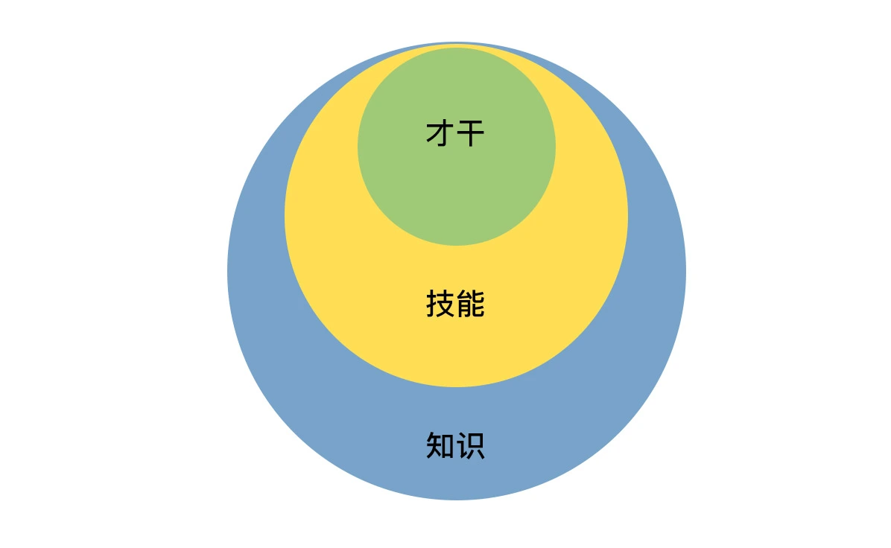
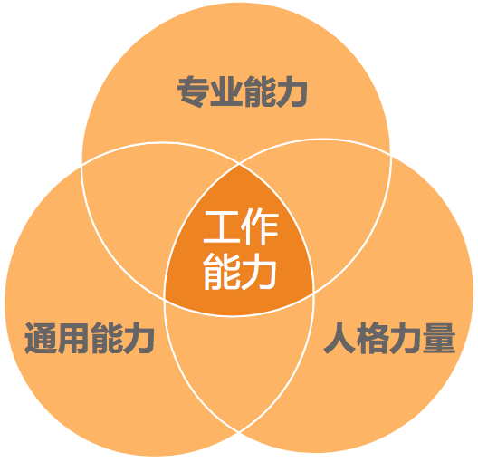

- 00 开篇词 你为什么需要学管理？.md
- 01 多年前的那些工程师都去哪了？.md
- 02 我要不要做管理呢？内心好纠结！.md
- 03 哪些人比较容易走上管理岗位？.md
- 04 我要不要转回去做技术呢？.md
- 05 作为技术管理者，我如何保持技术判断力？.md
- 06 我这样的风格能做管理吗？.md
- 07 我能做好管理吗，大家服我吗？.md
- 08 管理到底都做哪些事儿？.md
- 09 从工程师到管理者，角色都发生了哪些变化？.md
- 10 新经理常踩的坑儿有哪些？.md
- 11 我刚开始带团队，从哪里着手呢？.md
- 12 如何界定我团队是干什么的呢？.md
- 13 如何为团队设定合理的目标呢？.md
- 14 如何来规划团队的组织结构呢？.md
- 15 我都要申请哪些资源呢？.md
- 16 团队建设该从哪里入手？.md
- 17 如何提升员工的个人能力？.md
- 18 如何提升员工的工作意愿和积极性？.md
- 19 如何兼顾团队分工的稳定性和灵活性？.md
- 20 有什么方法可以有效提升团队凝聚力吗？.md
- 21 如何物色和培养核心人才？.md
- 22 如何建设团队文化，营造团队氛围？.md
- 23 如何和低绩效员工谈绩效？.md
- 24 如何让团建活动不再“收效甚微”？.md
- 25 多任务并行该如何应对？.md
- 26 如何确保项目的有效执行？.md
- 27 如何让流程机制得到有效的执行？.md
- 28 管理沟通那些事儿.md
- 29 沟通经常鸡同鸭讲，说不到一块怎么办？.md
- 30 如何掌控自己的情绪，以及如何管理情绪化的员工？.md
- 31 我各方面做得都很好，就是做不好向上沟通.md
- 32 横向沟通和非职权影响力.md
- 33 向下沟通的常见实例解析.md
- 34 管理沟通上有哪些常见的坑儿呢？.md
- 35 从空降谈管理方法论的积累.md
- 36 走出自己的管理之路.md
17 如何提升员工的个人能力？
上一篇文章，我们系统地探讨了如何提升一个团队的战斗力，并从中明白了这样一个简单的道理：提升团队战斗力的基础和前提，是提升员工的个体能力。显然，如果一个团队中员工的个体能力都不提高，整体的战斗力又如何提上去呢？
首先需要澄清一下：虽然我把个体能力这个要素放在了第一个来讲，而且也反复强调了个体能力是团队战斗力的基础，但是这并不意味着，当你要提升团队战斗力的时候，就必须先从这个要素下手。而应全面 review 团队建设六大要素，看看从哪个着手对你来说是事半功倍的，就从哪个要素去着手。如果恰好员工个体的工作能力是当务之急，那么，希望这篇文章可以带给你一些启发。
要探讨如何提升员工的能力，第一个要回答的问题就是：你要提升员工的什么能力？
“工作能力”这个概念看似具体，其实在沟通中会产生很多误会和分歧。那么工作能力到底有哪些呢？这里我介绍一下关于“能力”的两个最常见的划分方法。
第一个分法，就是在这个专栏的第 7 篇文章中，我们探讨“管理自信”时提到的“能力三核”，把人的能力分为知识、技能和才干三个层次（具体可以参看专栏文章 07）。如果我没有说错的话，大部分管理者希望员工提升的能力，是在“技能”这个层次，也就是员工能操作和完成的技术，比如快速学习能力、进度控制能力等。

“能力三核”
第二个分法，是把做好一份工作的能力分为人格力量、专业能力和通用能力（如下图）。

工作能力三维视图
人格力量通常是指一个人在面对某一情形时稳定的态度和表现，比如迎难而上、坚持不懈、积极正向、主动担当等等。这些人格力量对于个人能否搞定一件事情有时至关重要，但是培养起来却不是一朝一夕的，关键在于平时。
专业能力很容易理解，对于技术人来说，一般就是指技术能力。很多公司都有技术能力衡量标准和体系，用于评估工程师的技术水平。创业公司即使不会明文规定和实施这样的技术职级体系，但是一般也会参照这些大公司的要求和标准。所以，工程师专业能力的评价维度和标准相对于通用能力更加有据可循。
通用能力，每个人都会常常提起，但是很少有人能说清楚哪些能力算是通用能力。依我之见，你不需要去弄清楚这个模糊的概念，你只需要去定义一些你团队所重视的通用能力就好；入选你“通用能力清单”的这些能力，可以有效地帮你的员工做好工作。比如我会把沟通表达能力、团队协作能力、快速学习能力等作为重要的通用能力，并和我的团队达成共识。
通过上面的分层次探讨不难发现，提升员工个人能力的重点，会放在工作技能层面，包括专业能力和通用能力。
那么，要把这些能力提升到什么水准呢？或者说，其中的哪些能力够用就好？哪些能力要持续不断地提升呢？
关于这个问题的答案，我得先请你回答一个问题：你提升员工个人能力的初衷是什么呢？
你也许会毫不迟疑地回答说：“当然是为了做好工作了，这还有什么疑问嘛！”
其实，我们对于一个人的评价，从来都是有双重标准的，一个标准是“及格”，另外一个标准是“优秀”。所谓“及格”，就是只要胜任工作的要求就好了；而“优秀”，除了胜任工作要求，还需要脱颖而出，超出团队普通表现，成为整个团队的核心人物。
对于有些员工，你对他们的期待是把交代给他们的工作做好即可，所以侧重于提升他们的专业技能，以达到专业能力的硬指标，目标是“胜任”，也就是上面我们提到的“及格”，这是你期待的下限。
而对于另外一些员工，你对他们的要求和期待就不只是做好本职工作那么简单了，你还希望他们经过培养之后，能成为团队里的顶梁柱，这是你期待的上限。在这样的初衷之下，你不但对他们的专业能力要求高，还会对很多通用能力做出要求，比如目标管理、沟通协作等等，你甚至会为他们量身打造一个培养计划。
显然，不同的初衷决定了你制定什么样的标准，然后把这个标准写入员工的 IDP（个人发展计划），并双方达成一致，这就形成了个人能力提升的目标，是你们直接的一个“合作协议”。
接下来，我们就聊聊，如何达成这个目标。
关于做哪些事情来帮员工提升个人能力，相信你会有自己的经验和偏好。但也不外乎“7-2-1”法则，即：10% 靠听课和看书自学，20% 靠相互交流和讨论，70% 靠工作实践。我们可以按照这个思路去盘点一下常见的学习方式或方法。
第一类，关于帮助员工自学。对于管理者来说，常见的做法有：
组织员工参加培训；
为员工推荐和购买书籍；
提供学习文档、视频等；
……
第二类，关于相互交流讨论。对于管理者来说，常见的做法有：
组织兴趣小组、读书会等；
技术分享交流会、代码评审会等；
重点工作复盘，即 case study 等；
……
第三类，关于工作实践。对于管理者来说，常见的做法有：
授权和辅导。给员工独立负责重要工作的机会，并给予辅导和反馈。
调研工作项目化。即把调研学习的工作进行项目化管理。
总结并内化。对于员工完成的重要工作，有必要请他们做一个工作总结，看看从中学到了什么。员工在这个总结和反思过程中的收获，甚至比总结的结果本身更重要。
……
你还使用了哪些具体的方法吗？欢迎给我留言继续交流。
接下来，我们探讨一个很重要的话题。你有没有发现这样的一个情况，对于提升员工个人能力来说，最关键的往往不是学习的方法，而是学习的意愿。对于很多团队来说，并不缺少学习的机制，而是没有能够有效激发员工的学习动力。主动学习的员工总会是少数派，不只是公司的员工如此，社会生活中的人们亦是如此，所以有人说，“学习是反人性的事情！”
那么，作为管理者，你应该如何激发员工学习的动力和意愿呢？大体上可总结为如下三板斧：“推”“拉”“放手”。
所谓“推”，就是给压力，推着他们学。
提出明确的工作要求。比如，在 1 周内熟悉某个业务并可以做开发。
设置学习机制。也就是强制要求遵守学习规则，并完成学习任务。
peer pressure。团队整体学习成长的氛围，会给不学习的员工带来压力。
惩罚。包括从绩效等级、晋升机会、调薪幅度等等，对于学习意愿低的员工有适当的“关照”。
所谓“拉”，就是给方向，引导他们学。
树立榜样。把特别有学习意愿和成长快速的员工设为标杆人物，在团队内给予认可和奖励。
配备导师。有明确导师的新人和员工，更愿意请教问题并快速融入团队。也许有的管理者会说，“我们团队氛围很好，新人来了随便问谁都可以。”而事实上，有名义上的导师，比没有指明导师要好很多，“找谁都行”，即意味着没有人对此负责。所以，请为你团队成员配备导师，新人导师最好是团队内的，而资深员工的导师，可以找团队外更资深的人。
给地图。成熟的公司往往会有技术方面的“技能图”，作为管理者，你也可以为自己团队制定一个成长的“技能图”，并标记出重要等级。这样，团队成员就有了学习和成长的方向，知道该往哪里使劲了。
所谓“放手”，就是给发挥空间，让他们自主学习。
给员工勇挑重担的机会。在风险可控的情况下，给员工承担责任的机会，让他们去负责一些有挑战的工作。
给员工自主空间，让他们独立思考，独立决策。你的辅导仅限于在他们的决策之后给出看法和建议。
给员工信心和耐心，允许他们犯错、走弯路。因为很多经验都是踩坑儿踩出来的，所以不能一出问题就劈头盖脸一顿批，甚至是剥夺其做事的机会。
通常来讲，通过“推”“拉”“放手”，就可以激发很多员工的学习动力了，你甚至可以把学习和成长放入团队文化建设当中。当然，如果你要把学习作为团队文化的一部分，那就需要你自己首先有学习的“基因”。
最后，关于提升员工的能力，有两个信念特别重要。
第一是相信员工能力的差异性。即看到差异，重视丰富性。在工业时代，整齐划一、严格服从是团队管理的哲学；而在知识经济时代，员工的创造力能为团队带来更大的价值。创造力往往来源于差异的碰撞，所以作为管理者，你要特别关注能力的丰富性，标准不能太单一。
第二是相信团队能力的系统性。即欣赏差异，重视互补性。员工能力的差异，往往是他们对于团队的独特价值所在，管理者就是要像一位音乐指挥家一样，把各种优势各异的人统筹在一起，演奏出美妙的乐章。正如优势理论中所说的，所谓完美的团队，就是价值观相同，优势互补的团队。所以，作为管理者，你要看到团队能力的系统性，不要把各个员工的能力割裂来看。
好了，对于如何提升员工的个人能力这个话题，我们就先聊到这儿。归结起来无非就是三个步骤：
首先，定义你所谓的员工能力；
其次，设计出一些可行的方法；
最后，激发员工的学习动力。
你还有哪些好的经验和体会吗？欢迎留言分享。
© 2019 - 2023 Liangliang Lee. Powered by gin and hexo-theme-book.